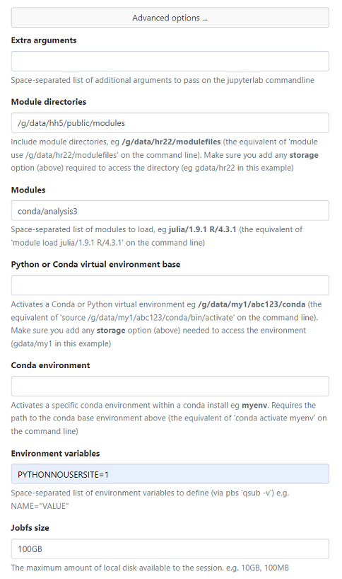
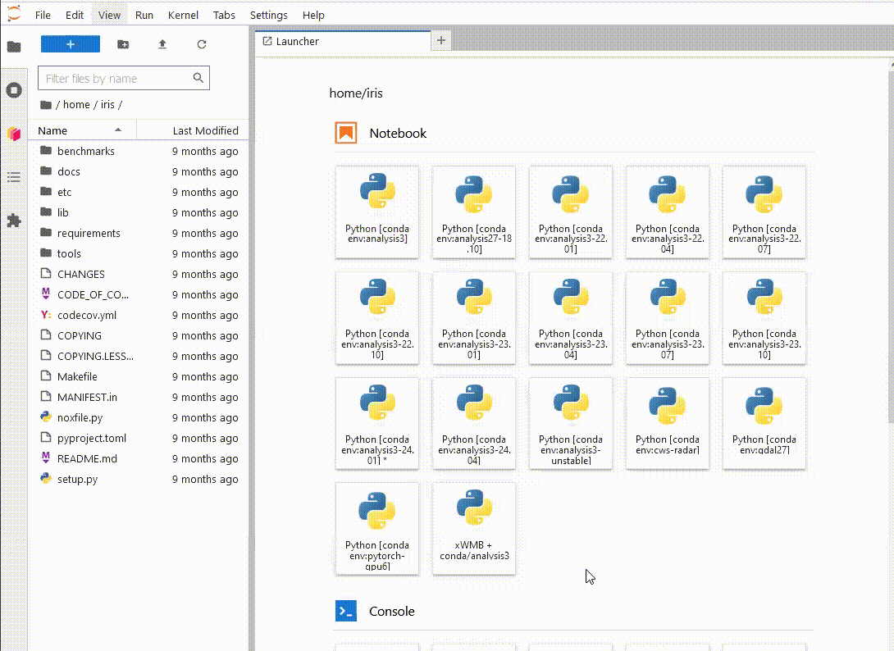

Building custom python environments on top of conda/analysis3#
Introduction#
The conda analysis environments in the hh5 project are a community-led approach to create a central
python environment specifically for the analysis of climate and weather data. As such, these environments
contain a wide range of packages curated by the CLEX CMS team that can fulfil the requirements of most
analysis workflows.
CMS uses the following guidelines to determine whether a package can go into the analysis3-unstable
environment:
Is the package available from
conda-forgeor some other reputable conda channel?Is the package in line with the scope of the environment (i.e. climate data analysis)?
Is the package actively maintained?
Is the package and its dependencies compatible with the existing environment?
If the answer to all of these questions is yes, then CMS will install the package into the environment on request. If, however, these conditions aren’t met, that doesn’t mean that you need to create a new conda environment from scratch to use a new package.
pip install --user#
Lets use the xWMB package as an example.
There is no conda distribution for this package, it can only be installed by pip from a git repository so it does not meet our criteria above. This
package also has an extensive list of dependencies, most of which are available in the conda/analysis3 environment, so using the analysis3
environment as a base will save quite a lot of disk space.
The simplest approach is to load the conda/analysis3 environment and pip install --user the xWMB package.
This is sufficient in certain cases, for instance, quickly testing user code, or when long-term
reproducibility is not necessary. The downside with this approach is that it can lead to problems in the future. First of all, everything will be installed in your /home directory, which has a small quota and can easily be filled by local pip installations. Another consideration is that the analysis3 module
is updated to every 3 months as new environments are released. For example, if you load conda/analysis3 today,
you’ll get the conda/analysis3-24.01 environment. If you were to load the same module a couple of months from
now, you’ll get the conda/analysis3-24.04 environment. Our policies around updating the conda environments
can be found here. As time goes on, your
locally installed package will get further and further out of date, and could potentially conflict with newer
packages installed in updated analysis environments.
In our advice to users, we recommend the following Advanced Settings for ARE environments:

Note the PYTHONNOUSERSITE=1 environment variable. This will have the effect of preventing anything installed with pip install --user from loading at all. This setting also works in the terminal and can be used as a first step to diagnosing any issues with python package imports.
Virtual environments#
What we recommend is creating a virtual environment. A virtual environment is a self-contained Python
environment built on top of an existing Python installation. The self-contained
nature of a virtual environment means that any issues due to conflicting
dependencies can be avoided entirely. Being able to base the environment on top of
an existing conda/analysis3 environment means that the installation can be kept
small, as most of the dependencies will have already been satisfied.
There are only two additional commands required to install xWMB into a virtual environment, as shown below:
Warning
Do not use pip install --user here, as this will result in the packages being installed in your ~/.local directory, leaving the virtual environment empty
And that’s it. We now have a fully self-contained environment with a custom
package built on top of the conda/analysis3 environment. It is important to note
that this virtual environment is tied to the version of conda/analysis3 that was loaded
at the time of its creation, so it avoids the out-of-date dependencies issue mentioned earlier.
Immediately after loading the conda/analysis3 module, you can run
source xwmb_venv/bin/activate and any python command or script will now run under the new virtual environment.
#!/usr/bin/env bash
#PBS -l walltime=1:00:00,mem=4GB,ncpus=1,storage=gdata/hh5
module use /g/data/hh5/public/modules
module load conda/analysis3
source xwmb_venv/bin/activate
python3 my_script.py
If you’re running a script directly, you can
change the path in the shebang line to the path to the python symlink in the virtual environment:
#!/home/563/dr4292/xwmb_venv/bin/python3
import xwmb
...
Troubleshooting#
Virtual environments are designed to be disposable, so if something goes wrong, instead of trying
to fix the environment in place, it is safe to simply delete the environment and start again.
There are many reasons this might need to happen, for example, you’re installing an old
package that is not compatible with e.g. numpy installed in the conda/analysis3 environment.
In that case, you could simply delete the environment, load an older conda/analysis3 environment
and re-create it.
In a similar vein, if you’re installing more packages into a virtual environment and they begin to conflict with each other, the best course of action is to create a new virtual environment. Virtual environments are isolated from each other, so rather than creating large, monolithic environments, it is common practice to create virtual environments for a single package, and have multiple virtual environments depending on your immediate requirements.
In general, if anything in the environment doesn’t work for whatever reason, the best course of action
is to delete it and try again. You may need to try different conda/analysis3 environments, or, if none of those
work, use one of the NCI installed Python modules as your base.
Note
NCI’s Python modules do not have dask, xarray, etc. installed, so the resultant virtual environments could be quite large.
Jupyter Kernel#
There is one more step necessary to have your new virtual environment usable as a kernel in an ARE JupyterLab session.
You’ll need to call ipykernel install while the virtual environment is activated.
Note
Since this virtual environment is built on top of conda/analysis3, you do not need to install ipykernel in it, as this is already present in the conda environment.
Now, when
you launch a new ARE JupyterLab instance, you will be able to see your new environment,
launch a notebook and import the xWMB package

You only have to do this once. If you delete the environment and recreate it at the same path, Jupyterlab will still be able to use it.
Summary#
While CMS tries to make the hh5 conda analysis environments as comprehensive as possible, we can’t
always install the packages you need. By creating a virtual environment using the conda/analysis3
environment as your base,
its possible to add in packages CMS can’t install, without having the overhead of maintaining
your own large conda environment. Furthermore, using a virtual environment is more stable and easier to maintain and reuse than installing software using pip install --user. Virtual environments are simple to
install, and simple to delete and re-create as necessary. Virtual environments can also be seamlessly integrated into
ARE JupyterLab sessions, allowing you to use it anywhere you would use an analysis3 conda environment.
Acknowledgements#
Thanks to Davide Marchegiani for animated-terminal.js.